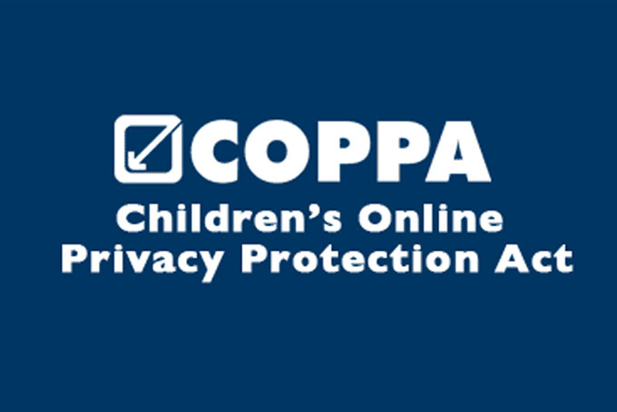

COPPA Throught the 21st Century

Coppa Logo- received from www.coppa.org
-
Background
-
Electronic commerce was on its rise in the 1990s, but concerns have arised about the ways in which data was being collected and its impact on virual commerce, especially when it comes to children and people with disabilities.(What Is Children's Privacy Law?) The Federal Trade Commission was petitioned by the Center of Media Education, in order to investigate the data collection of a site by the name of Kids.com (What Is Children's Privacy Law?). The Center of of Media Education also petitioned that the Kids.com website violated Section 5 of FTC Act concerning "unfair/deceptive practices". The FTC ultimately found the Kids.com website in guily of abusing data collecton practices against children (Children's Online Privacy Protection Rule (‘COPPA’)). Parents were informed of the risks of children's online privacy. COPPA was drafted and eventually founded on this principle (Children's Online Privacy Protection).
-
COPPA is enforced by the Federal Trade Commission. Also under the terms of COPPA, the FTC-designated "safe harbor" provisioning is designed to encourage increased industry self-regulation (What Is COPPA (Children's Online Privacy Protection Act)). Under this provision, industry groups and others may request Commission approval of self-regulatory guidelines to govern participants' compliance, such that website operators in Commission-approved programs would first be subject to the disciplinary procedures of the safe harbor program in lieu of FTC enforcement. As of June 2016, the FTC has approved seven safe harbor programs operated by TRUSTe, ESRB, CARU, PRIVO, Aristotle, Inc., Samet Privacy, and the Internet Keep Safe Coalition(Children's Online Privacy Protection Rule (‘COPPA’)).
-
The Children's Online Privacy Protection Act is only able to affect commercial websites with customers primarily under 13. Many recognized non-profit organizations are exempt from most of COPPA's requirements(What Is COPPA (Children's Online Privacy Protection Act)).
Old School Coomputer- image received from www.medium.com
-
Violations
-
The FTC is not afraid to enforce actions upon websites that vioate rules of COPPA.
-
In February 2004, UMG Recordings, Inc. was fined US $400,000 for COPPA violations in connection with a web site that promoted the then 13-year-old pop star Lil' Romeo and hosted child-oriented games and activities, and Bonzi Software, which offered downloads of an animated figure "BonziBuddy" that provided shopping advice, jokes, and trivia was fined US$75,000 for COPPA violations.[17] Similarly, the owners of the Xanga website were fined US$1 million in 2006 for COPPA violations of repeatedly allowing children under 13 to sign up for the service without getting their parent's consent(Children's Online Privacy Protection).
-
In 2016, the mobile advertising network, inMobi was fined US$950,000 for tracking all ages of users (13 and younger and older) geo-location unknowingly. The advertising software continuously tracked user location despite privacy preferences on the mobile device. Other websites that were directed towards children and fined due to COPPA include Imbee (2008) Kidswirl (2011), and Skid-e-Kids (2011).(Children's Online Privacy Protection)
-
In February 2019, the FTC issued a fine of $5.7 million to ByteDance for failing to comply with COPPA with their TikTok app. ByteDance agreed to pay the largest COPPA fine since the bill's enactment and to add a kids only mode to the TikTok app. (What Is Children's Privacy Law?)
-
Compliance
-
The Federal Trade Commission issued revisions requiring parental consent for organizations with commercial websites directed towards children. This was passed in December of 2012, and effective July of 2013(Children's Online Privacy Protection Rule (‘COPPA’)). These companies must:
- Establish and maintain reasonable procedures to protect the confidentiality, security, and integrity of the personal information collected from children under age 13, including by taking reasonable steps to disclose/release such personal information only to parties capable of maintaining its confidentiality and security; and;
- Retain personal information collected online from a child for only as long as is necessary to fulfill the purpose for which it was collected and delete the information using reasonable measures to protect against its unauthorized access or use.;
- Post a clear and comprehensive online privacy policy describing their information practices for personal information collected online from persons under age 13;
- Operators are prohibited from conditioning a child's participation in an online activity on the child providing more information than is reasonably necessary to participate in that activity.;
-
With the information provided to website owners from accessing a website, operators receive actual knowledge of a user's age, such as a date of birth. Website operators with knowledge of the age of their users are susceptable to COPPA laws.
-
Websites operators are charged a fee by Microsoft under COPPA as a way to verify parent consent. The fee is donated to the National Center for Missing and Exploited Children (Children's Online Privacy Protection).
-
After the changes made by COPPA in July, 2013, the definition of an operator was updated to make clear that COPPA covers a child-directed site that collect personal information from its visitors (Children's Online Privacy Protection Rule (‘COPPA’)). Plug-ins and ad networks are also subjected to COPPA if they are included on child directed sites. Websites and services that target children as a secondary audience may differentiate among users, and are required to provide notice and obtain parental consent only for those users who identify as being younger than 13 (What Is Children's Privacy Law?). The definition of personal information requiring parental notice and consent before collection now includes "persistent identifiers" that can be used to recognize users over time and across different websites or online services(What Is COPPA (Children's Online Privacy Protection Act)). With the introduction of Facebook and the growing popularity of social media website, the definition of personal information after also includes geolocation information, as well as photos, videos, and audio files that contain a child's image or voice.
-
As of November 19, 2015, the FTC accepts "face match to verified photo identification" (FMVPI) as a an additional method for obtaining verifiable parental consent. The two-step process allows a parent to submit a government-sanctioned ID for authentication, and it can be then compared to a photo submitted online.
-
Internal Scope
-
Though COPPA is an American law, it still applies to foreign-operated web sites if such sites "are directed to children in the U.S. or knowingly collect information from children in the U.S."(Children's Online Privacy Protection) Since it is US Federal law, it's applicable only to websites that are run:
- by websites under U.S. jurisdiction;
-
by websites which are hosted on servers in the U.S.;
-
by websites with owners headquartered in U.S. territory; or
-
by commercial websites available in U.S. market.
-
European Union's General Data Protection Regulation article 8 explicitly says that children's personal information deserves parental consent as well. However, GDPR has variable age of consent - from 13 to 16.